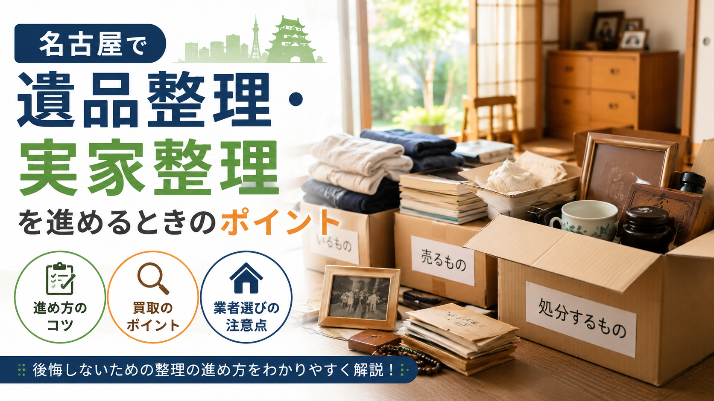
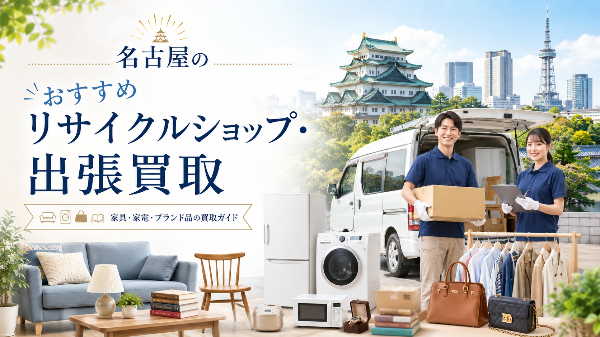

中部お問合せ 10:00-20:00 年中無休
LINE・WEB受付
LINE査定
名古屋拠点で、中部地方の皆様に最短即日のおもてなし対応。
家財一式・遺品整理・店舗閉店まで、尾張の落ち着きと中部のものづくり気質で丁寧に査定。
「お家のお片付け、まかしときゃー」が私たちのモットーです。
— SERVICE LINEUP —
名古屋の住宅事情・ものづくり文化を熟知したスタッフが、お家・店舗まるごとを一括対応。
処分と買取を1社で完結するから、お客様の手取りが伸びる仕組みです。
▶ 引越し・住替えのご家庭に
ワンルームから戸建てまで、家中の家財を一気に査定。買取と処分を相殺し、最終支払いを最小化または「+収益」に変えます。
▶ ご家族のお気持ちにそっと寄り添う
遺品整理士同行・女性スタッフ対応可能。貴重品の捜索、思い出の品の仕分け、お仏壇のご供養まで。立会いなしでもLINE動画報告で安心。
▶ 飲食・物販・サロンのオーナー様へ
栄・名駅・大須など名古屋繁華街での閉店事例多数。厨房機器・什器・在庫・看板まで一括対応。明け渡し期日が迫っても最短2日で完全撤去。
— OUR PROMISE —
名古屋支店ならではの強みをご紹介します。
運び出し・処分・買取をワンパッケージで請負。お客様の最終手取りが大きくなります。
他店さんの見積書を見せてもらえれば、必ず上回る金額をご提案。「どえりゃー高く」がお約束です。
遺品整理士・女性スタッフ・古物商免許保有。中部の職人気質で一品一品丁寧に査定します。
名古屋市内の拠点から愛知全域へ即日出張可。朝のご相談で当日中の査定が可能です。
— FLOW —
名古屋支店スタッフが、ご相談から搬出までスムーズに進めます。
LINEまたはWEBフォームから24時間OK。写真があればすぐ概算がお出しできます。
ご都合の日時にお伺いし、目の前でじっくり査定。出張費・キャンセル料は0円です。
その場で現金または翌営業日までに振込でお支払い。明朗会計です。
養生付きで搬出し、お部屋・店舗もきれいにしてお返し。お見送りまで丁寧に。
— REAL CASES —
名古屋・愛知で実際にお取引きさせていただいた事例の一部です。
— AREA —
名古屋市16区を拠点に、愛知県内（一宮・春日井・小牧・刈谷・安城・豊田・豊橋など）、岐阜県・三重県の主要都市まで対応します。
エリア外もまずはご相談ください。
▶ 対応エリア詳細ページを見る
— CUSTOMER VOICE —
名古屋・愛知の皆様からいただいたお声をご紹介します。
覚王山の実家を片付けるのに、リタウン名古屋さんにお願いしました。古い茶道具や着物まで丁寧に査定してくださり、想像以上の金額に。「お母様、いいもの大事に使ってみえたんですね」って言葉も嬉しかったです。
栄で10年居酒屋やってましたが、店を畳むことになりました。何社か見積もり取ったんだけど、リタウン名古屋さんが一番高くて対応も気持ちよかったです。原状回復業者も紹介してもらえて助かりました。
急に転勤で豊田から東京へ。マンションの家具家電を一気に引き取ってもらえて、買取額で引越し費用がほぼ賄えました。スタッフさんも愛想よくて、中部らしい誠実な対応が好印象でした。
— PROMISE —
ご相談から搬出まで、追加請求は一切ありません。
愛知県内の出張は完全無料。お見積もりに費用はかかりません。
金額にご納得いただけなくてもキャンセル費用は一切なし。
他店見積書ご持参で必ず上回る金額をご提示します。
見積もり後の追加費用はゼロ。明朗会計をお約束します。
— FAQ —
ここにない質問もお気軽にどうぞ。
— GUIDE —
業者選びにお悩みの方へ。名古屋エリアで利用できるリサイクルショップ・出張買取業者を比較解説しています。
名古屋・中部エリアのおすすめリサイクルショップ・出張買取業者を厳選してご紹介。自動車関連の社宅引越し・戸建ての家まるごと買取に強い業者選びのポイントをまとめています。
— LATEST GUIDE —
名古屋エリアの出張買取・リサイクルショップ・遺品整理に関するお役立ち記事をお届けします。

遺品整理・実家整理重要書類・貴重品の確認、家族での方針決め、買取できる物の仕分け、思い出の品の扱い、遠方からの整理、空き家対策、業者選びまで、無理なく進めるための手順を解説。
続きを読む →申込から査定・搬出までの基本的な流れと、家電の年式確認、型番メモ、写真撮影、付属品、搬出経路、本人確認書類まで、初めての方も安心して依頼できる準備リストを掲載。
続きを読む → 買取相場
買取相場
冷蔵庫・洗濯機・テレビ・電子レンジ・エアコン・ソファ・ダイニング・ベッド・食器棚など、主要品目別の買取相場目安と査定で見られるポイントを解説。
続きを読む →
大手チェーン比較名古屋市内・愛知県内で利用しやすい大手リサイクルショップを目的別に比較。家具・家電・ブランド品・楽器・ホビーまで、売りたい品目別の選び方を解説します。
続きを読む →出張査定・キャンセル料はゼロ円。LINEなら写真送るだけで仮査定OK。
「これ売れる？」「こんな状態でも大丈夫？」だけのご相談も大歓迎です。